Review · home and Work illustrations · 2026-09-28 · branch home-illo-hand
Direction B from the Fable exploration, built into the home and Work pages. No window, no arrow: a cursor performs each case's one change from left to right. Each click leaves a ring and a mark that stays. The scene ends resolved, holds, and fades back to the start (12s). The loop pauses off screen, moves transform and opacity only, and under reduced motion the scene shows its resolved state, still. Below 900px the cursor hides and the scene stacks, still: before above, after below.
See it moving on the preview: home · Work. Each row below: the resolved state at 1400px, a frame mid-action (5s in), and the stacked scene at 375px.
Labels are the ones in direction B. New compared with the live site: "AI page, apart" (was "AI page"), "The platform, three screens" (was "The platform"), "Two answers", "One source", "New part to review", "Fixed bundle, one price" (was "Fixed bundle" and "One price"). The case 04 scene goes back to the two libraries and one source (the live one is the Library and Drift product view).
The cursor picks the AI up from its own page and drops it on each place; every drop turns the row white with its own send.
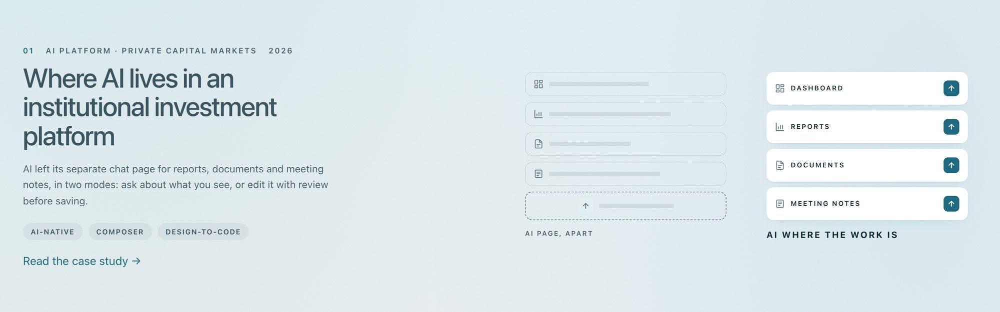
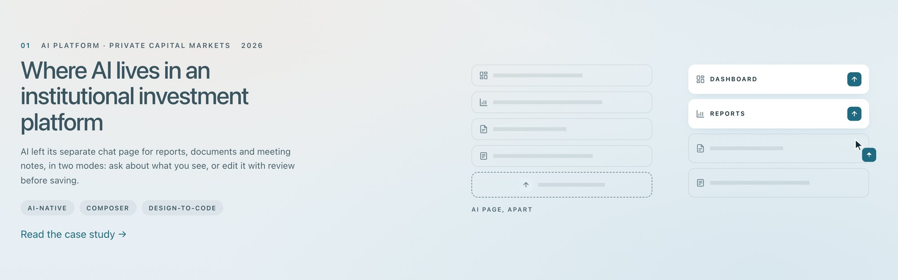
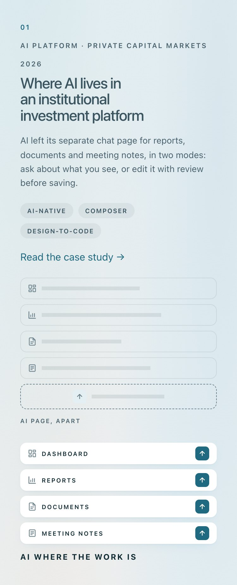
The cursor tries the platform (nothing answers), then clicks Reply in the email: it turns to Sent and the result label appears.
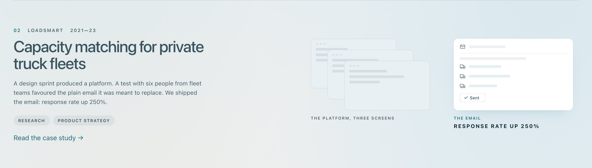
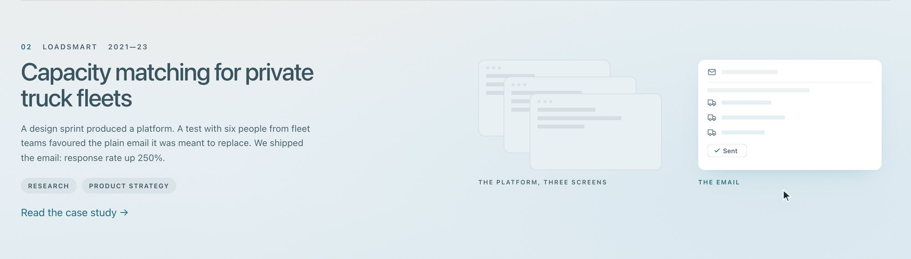
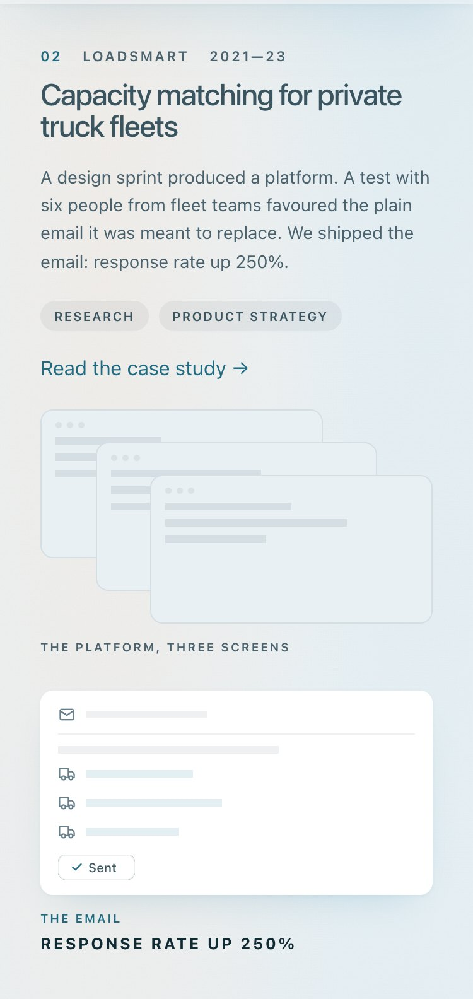
The cursor clears the first layer control by control until the field, plus, model and send remain, then presses send.
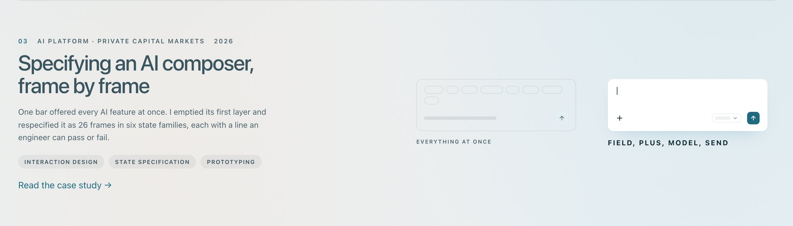
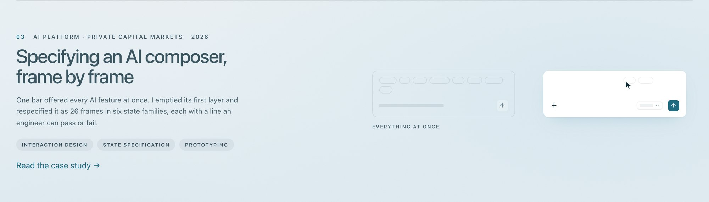
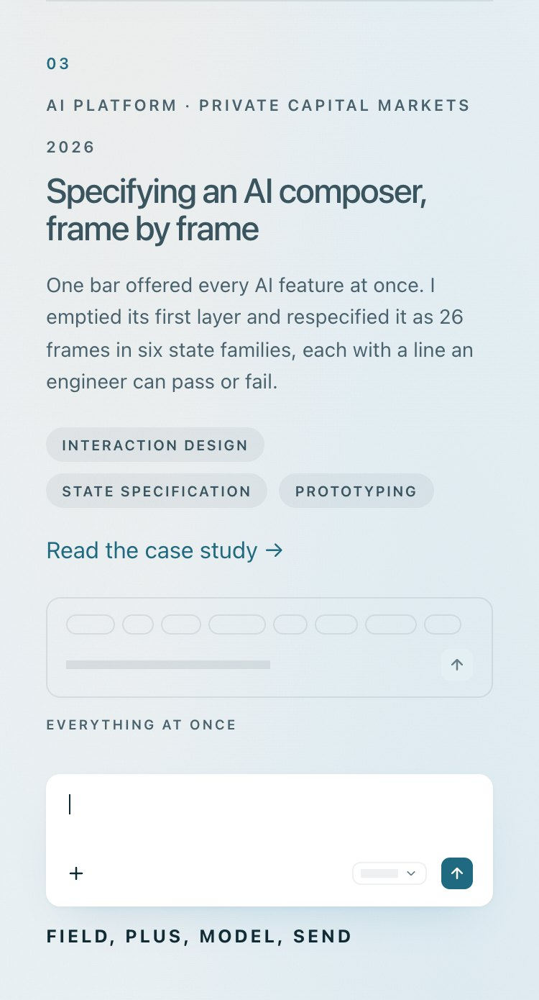
The cursor picks the design tool, then the code, and the one source answers for both; its last click on the slot brings a new part in for review.
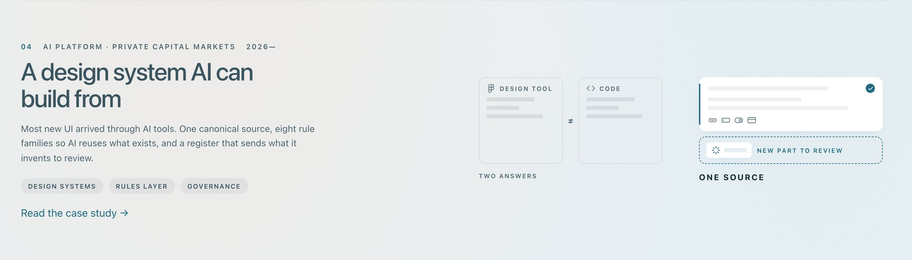
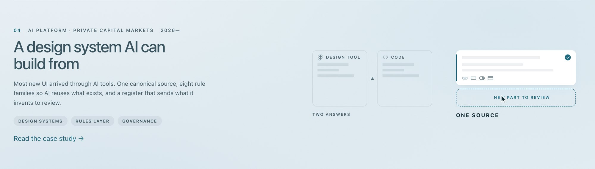
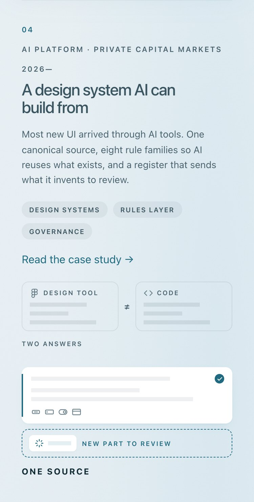
The cursor picks another office (its layout changes), then adds a widget in the open slot.
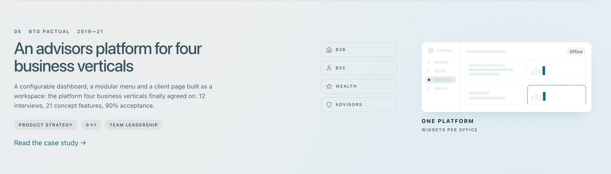
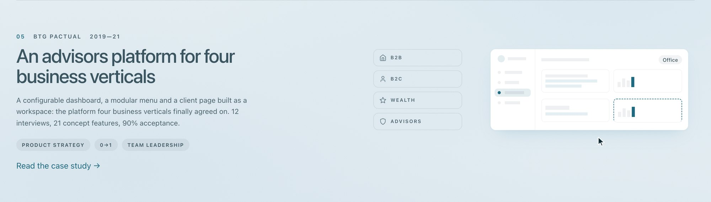
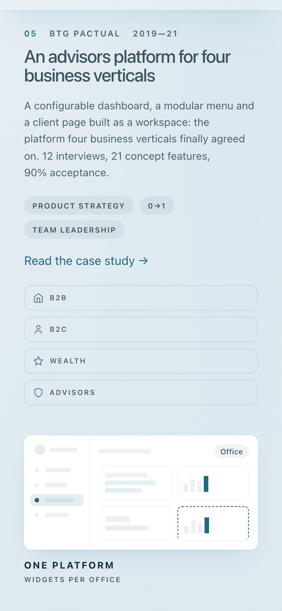
The cursor leaves the locked bundle and switches two modules on; each toggle slides and its row turns white.
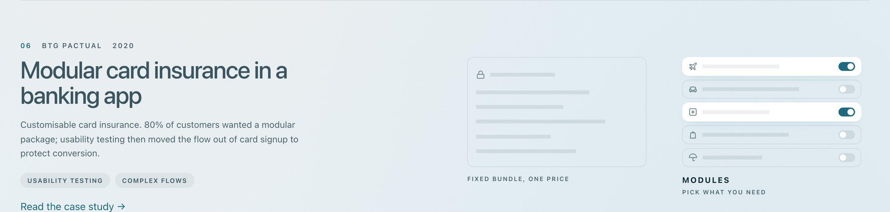
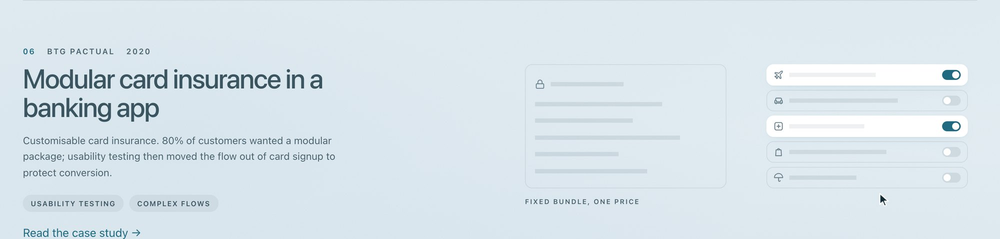
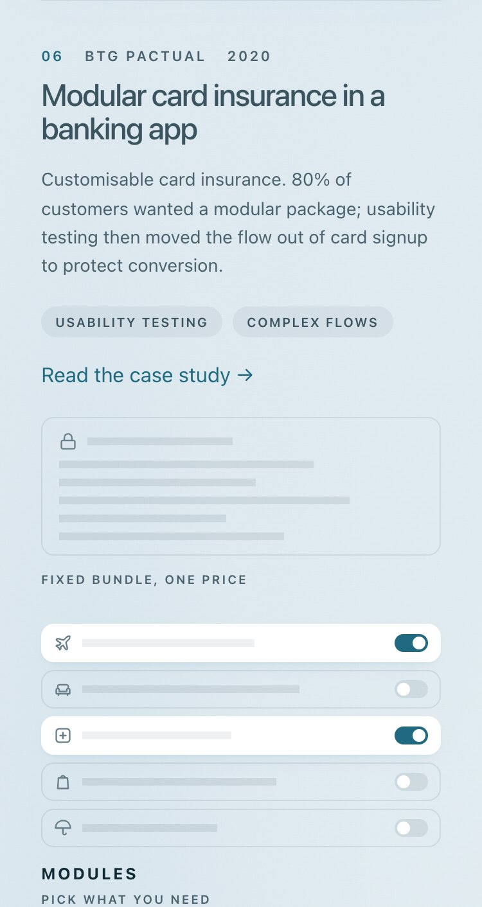
ILL-06 (620px box, stacked below 900px, source _review/home-illo-hand/scenes.py), ILL-07 (the cursor's route replaces the arrow; the ghost outline in --border-divider), ILL-01 (a cursor and clicks; scenes loop again, paused off screen), DEP-01 (a scene is story 0, cards on the sky), ILL-02 (the core label at --font-size-diagram-heading), MOT-02 (scene loops: transform and opacity only). The ILL-01 check now fails a loop that runs out of view, any property other than transform and opacity, and any motion under reduced motion or below 900px; harness/check.py adds a reduced-motion pass for home and Work.